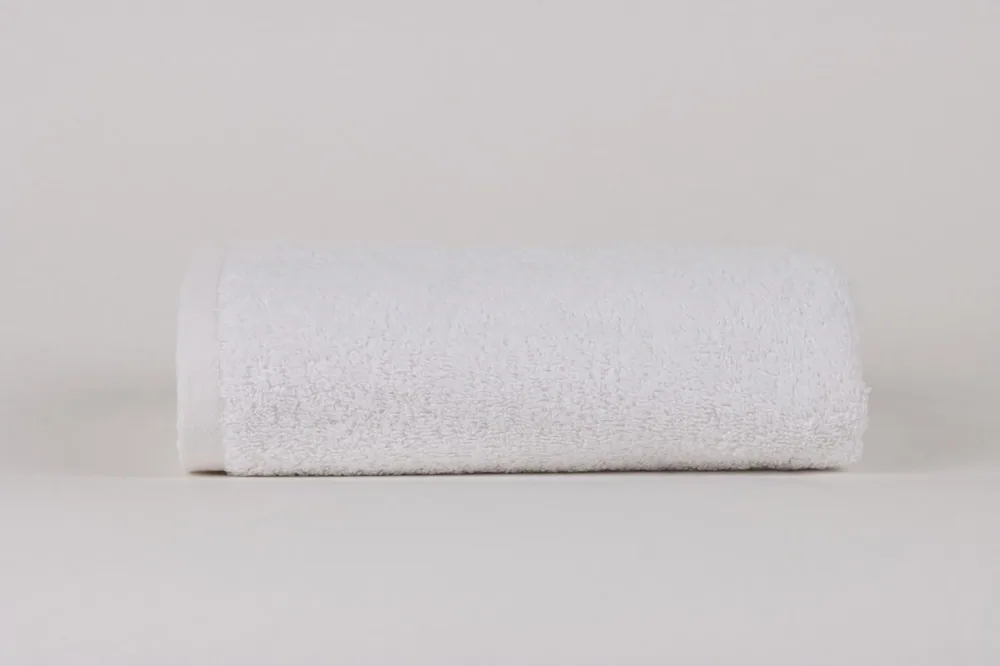
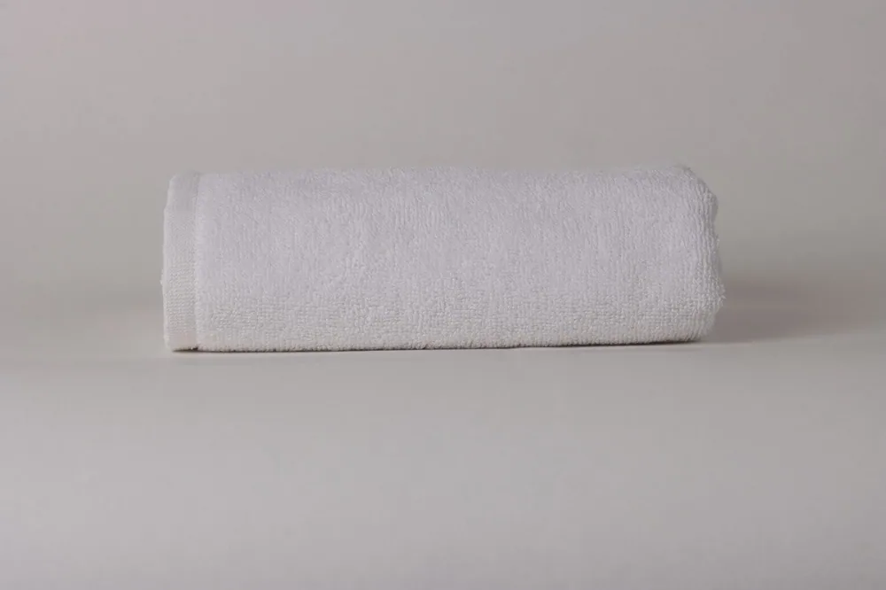

СтандартРушники · Стандарт
Рушник махровий 500 г/м² · 16/1
Білий бавовняний рушник для щоденної комплектації номерів.
Особливість
Практична пряжа 16/1 і два формати дають зрозумілу базу для великого обороту.
Професійний рушник має швидко поглинати вологу, зберігати форму в обороті та залишатися приємним для гостя після багатьох циклів догляду.
Порівняйте матеріали й особливості виробів, оберіть розмір і колір та додайте потрібне до замовлення.

СтандартБілий бавовняний рушник для щоденної комплектації номерів.
Практична пряжа 16/1 і два формати дають зрозумілу базу для великого обороту.
 Комфорт
КомфортУніверсальна щільність із пряжею 20/2.
Зберігає робочу щільність 500 г/м², але пропонує інший тактильний характер петлі.

ПреміумЩільніший бавовняний рушник для номерів із підвищеним акцентом на відчутті.
550 г/м² додають об’єму та відчутної ваги — саме там, де гість торкається текстилю щодня.
Кольорова лініяКольорова бавовняна махра для SPA, басейну й акцентного комплекту.
М’яка кольорова махра для гармонійного поєднання з інтер’єром номера або SPA.
Компактна бавовняна серветка для комплектації ванної або wellness-зони.
Компактний формат 30×30 см для сервірування ванної кімнати та SPA-процедур.
GSM показує масу полотна, але працює лише разом із якістю пряжі, висотою петлі та режимом сушіння.
Серветка, рушник для рук, банний і pool-format мають утворювати логічну систему, а не випадковий набір.
Надлишок кондиціонера може покривати волокно й знижувати поглинальну здатність махри.
Залиште контакти — уточнимо сценарій використання, кількість і бажаний рівень, після чого підготуємо пропозицію.